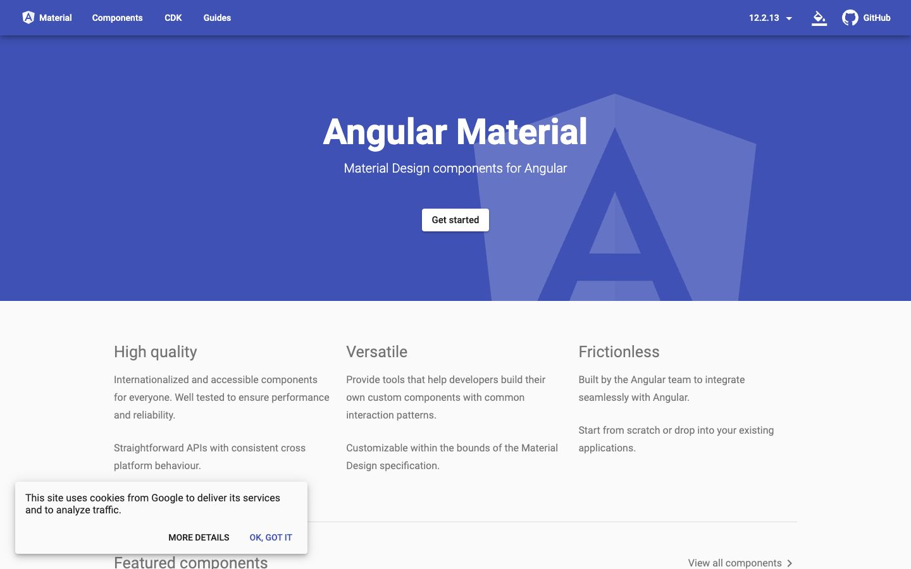

References / Website / 111
Angular Material 12 documentation website
Google’s Angular component library, documented in its own Material 2 components: an indigo app bar, a white raised button, and Roboto on pale gray.
- Source
- Angular Material 12.2 documentation (v12.material.angular.io)
- Creator
- Google, Angular team
- Style
- Material Design (agent-proposed, not yet reviewed by a person)
- Moods
- Orderly, confident, systematic
- Evidence
- Captured with
tools/capture.mjs(headless Chrome, 1440 × 900) on 28 September 2026 and inspected. The screenshot shows the first viewport; the measurement covers up to four screens. A small cookie notice covers part of the lower left corner. - Reviewed
- Rights
- Third-party work, stored with credit for commentary. License: unverified. Rights policy
This is the archived documentation for version 12 (2021). The current Angular Material site uses Material 3.
Observed
- A full-width indigo app bar holds the white labels Material, Components, CDK, and Guides, a version menu reading 12.2.13, and a GitHub link. A soft shadow falls from the bar onto the hero.
- The hero is the same indigo, with a large pale Angular shield behind the bold white title “Angular Material” and the line “Material Design components for Angular”.
- A small white “Get started” button has slightly rounded corners and a soft shadow.
- Below, three columns of gray Roboto text (High quality, Versatile, Frictionless) sit on a pale gray ground.
- A white cookie notice with a soft shadow covers part of the lower left corner. Its OK, GOT IT button is indigo text in all capitals.
Why it belongs
The page measures a shadow on 55 % of its boxes, a median blur of 3 px and offset of 2 px (a 1 dp Material 2 surface), a 4 px median radius, and a chromatic share of 0.46.
Borrow
Let the primary color of the app bar continue into the hero, and separate the two only by the bar’s shadow.
Measured
Machine-extracted by tools/extract-traits.js on . Full measurement.
- Type families
- Roboto (96%), Material Icons (4%)
- Type scale ratio
- 1.16
- Median radius
- 4 px
- Mean chroma
- 0.21
- Palette
- #3f51b5 46%
- #fafafa 40%
- #000000 14%

